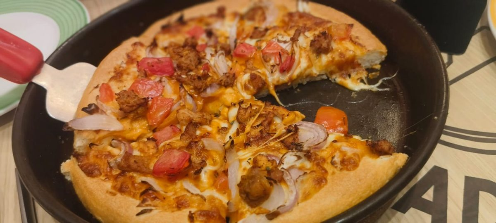
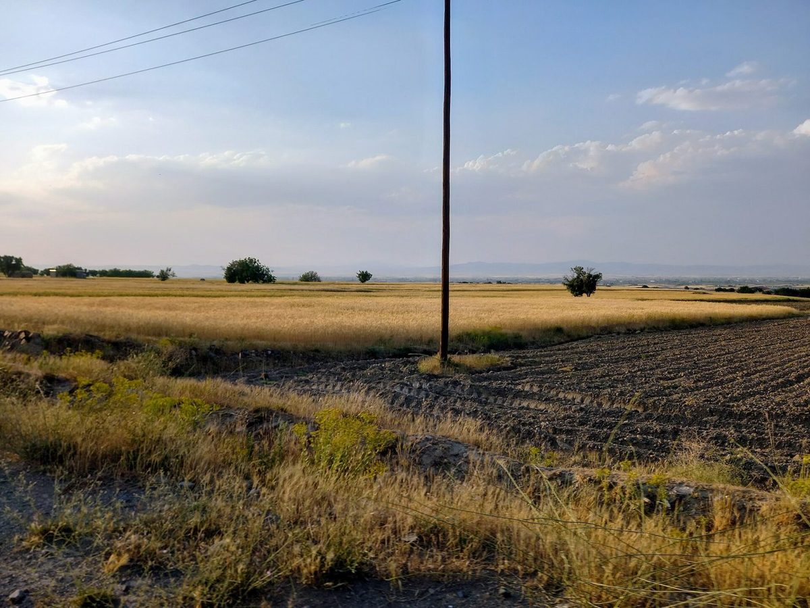
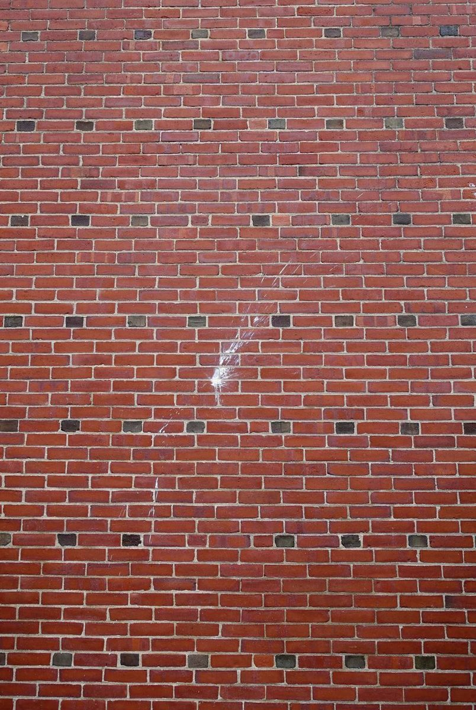
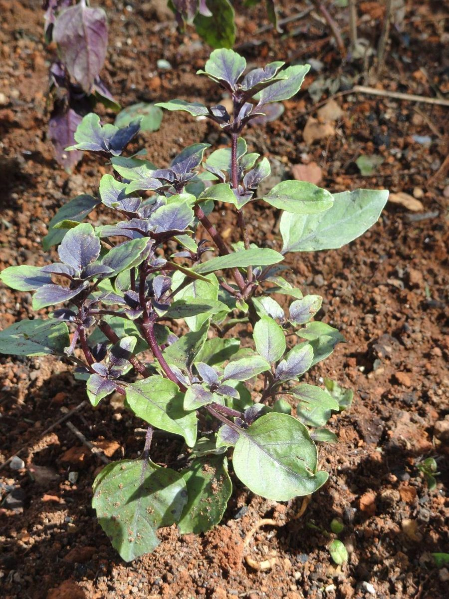
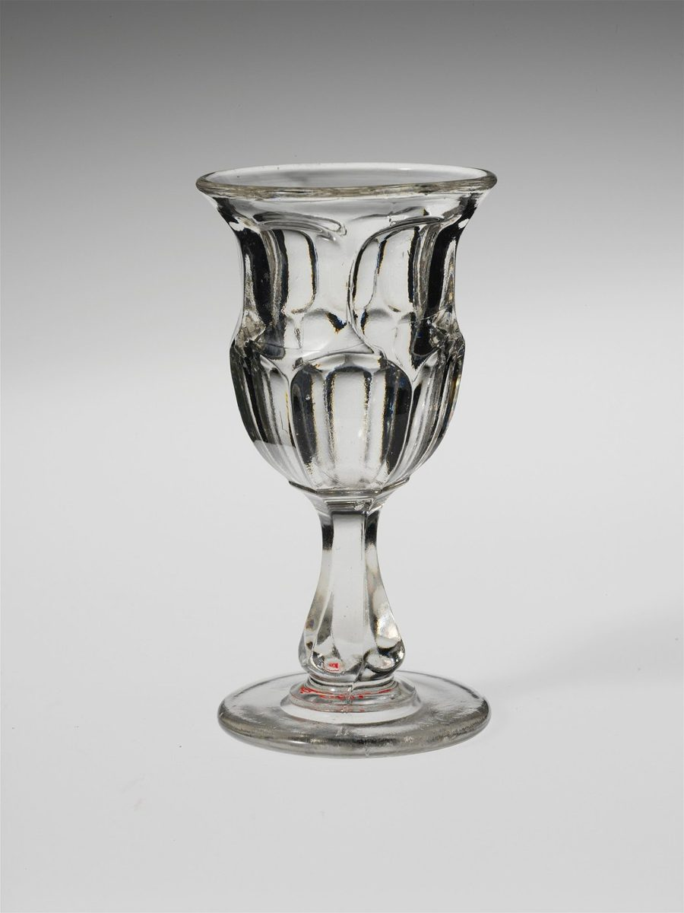
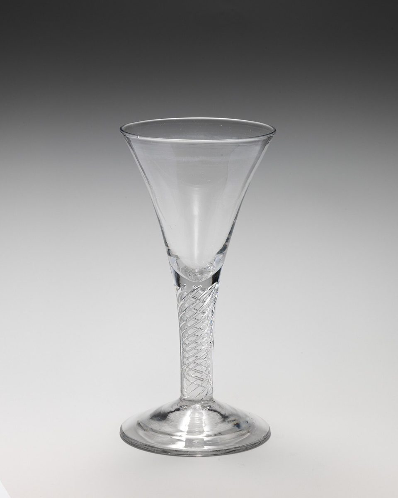
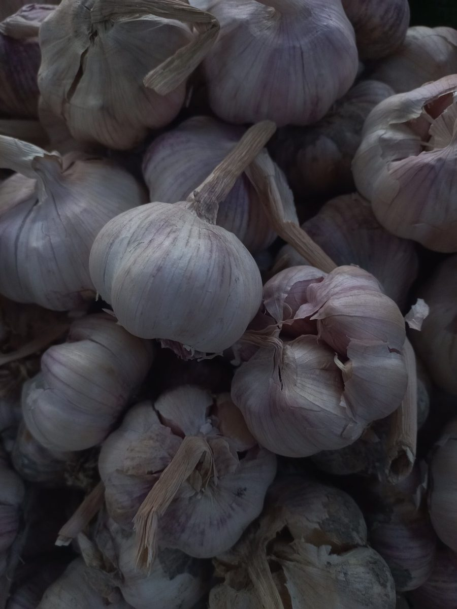

PZ
仲間と集まって、シェアして、持ち帰れる。元鉄工所の窯から、男鹿の新しい食卓を。
男鹿・船川のピザ専門店 ／ おいしいファクトリーCADAR内ABOUTお店の由来と想い
PZ(ピーゼット)は、男鹿駅から歩いて約10分、船川エリアに2026年4月29日に開業した、このエリア初のピザ専門店です。かつて鉄工所だった建物を再生した複合施設「おいしいファクトリーCADAR」の中にあります。
掲げているのは、男鹿に「仲間と集まって、シェアして、持ち帰れる食」の選択肢を増やすこと。ピザを、この町の新しい食文化として根づかせたいという想いが報じられています。
メニューは東京のピザ店「CRAZY PIZZA」の平雅一シェフらが監修。男鹿産の紅ズワイガニを使ったピザも登場します。店名の意味は公表情報では確認できませんでした。
写真はすべてフリー素材のイメージです。店舗の実際の様子・料理ではありません。実際の写真はご提供いただいたものに差し替えます。





MENUメニュー
報道で紹介されている内容です。価格・営業時間などの詳細は準備中です。






VOICE口コミ(イメージ例)
以下は制作側が作成した「イメージ例」であり、実在のお客様の声ではありません。
イメージ例
仕事帰りに仲間と立ち寄って、ピザを分け合いました。高い天井の空間が開放的で、ついゆっくりしてしまいます。
イメージ例
家族で食べきれない分を持ち帰りにしました。温め直しても美味しく、男鹿ならではの具材も気になります。
イメージ例
ランチに寄ってみました。ピザにレモネードを合わせて、のんびりした昼休みになりました。
ACCESSアクセス
- 住所
- 〒010-0511 秋田県男鹿市船川港船川化世沢175-11(おいしいファクトリーCADAR内)
- 電話
- 準備中
- 営業時間
- 準備中
- 定休日
- 準備中
- 行き方
- JR男鹿線 男鹿駅から徒歩約10分(報道による)
- @pz_oga(最新の営業情報はこちらをご確認ください)
CREDITS写真クレジット
掲載写真はすべてフリー素材(Wikimedia Commons)のイメージです。
- pz_pizza1.jpg: 「Pizza 25」 Kurt Kaiser / 出典 / CC0 1.0 (creativecommons.org)
- pz_pizza2.jpg: 「Tomato onion pizza」 Swathi sri srinivasa raghavan / 出典 / CC0 1.0 (creativecommons.org)
- dough.jpg: 「Bread dough 2018」 Kotivalo / 出典 / CC0 1.0 (creativecommons.org)
- pz_field.jpg: 「Wheat fields 17」 Shams948 / 出典 / CC0 1.0 (creativecommons.org)
- pz_garlic.jpg: 「Garlic-618400」 Adriano Gadini / 出典 / CC0 1.0 (creativecommons.org)
- pz_pepper.jpg: 「Red bell pepper on a plate 2017 A」 Fructibus / 出典 / CC0 1.0 (creativecommons.org)
- pz_basil.jpg: 「Ocimum pupuraceus - Jardim Botânico de Brasília」 Daderot / 出典 / CC0 1.0 (creativecommons.org)
- pz_brick.jpg: 「Brick wall - Arlington, MA」 Daderot / 出典 / CC0 1.0 (creativecommons.org)
- pz_lemon.jpg: 「Dried lemon slices」 Fumikas Sagisavas / 出典 / CC0 1.0 (creativecommons.org)
- pz_wine.jpg: 「Wine Glass MET DP234714」 The Metropolitan Museum of Art / 出典 / CC0 1.0 (creativecommons.org)
- pz_beer.jpg: 「Beer or ale glass MET DP-511-005」 The Metropolitan Museum of Art / 出典 / CC0 1.0 (creativecommons.org)
- pz_wood.jpg: 「Wood Texture Background」 Bango Textures / 出典 / CC0 1.0 (creativecommons.org)
- pz_garlic2.jpg: 「"Garlic" picture」 Kuwanishbek / 出典 / CC0 1.0 (creativecommons.org)